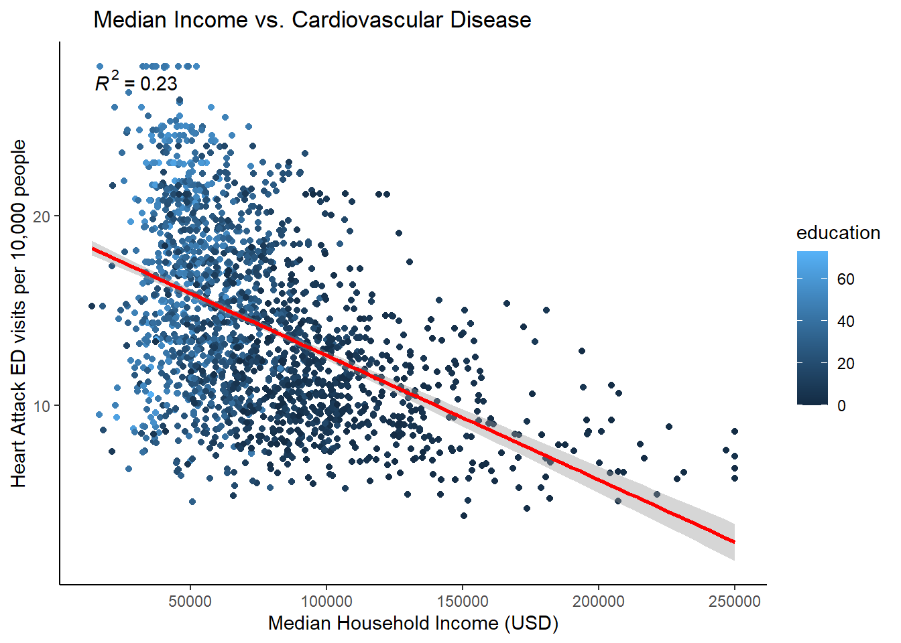

Does Household Income Have an Affect on Cardiovascular Health?
Motivation
According to the CDC, cardiovascular-related diseases are the leading cause of death in America. Although there are a number of factors that influence cardiovascular diseases, I chose to study the relationship between median income of census tracts in Los Angeles County and the number of cardiovascular disease-related Emergency Department (ED) visits. In this research project, I will conduct a difference in means hypothesis test of two groups : Extremely Low Income and Above Moderate Income to see if there is a true difference in heart attack-related Emergency Department (ED) visits.
Cardiovascular disease can be caused by a variety of factors. Some traditional risk factors include “male sex, older age, increased blood pressure, high cholesterol, low HDL (high density lipoprotein) and smoking”(epa.gov 2023). However, there are additional external factors that can exacerbate the likelihood of cardiovascular disease occurring. The EPA also states that people who live in areas with high air pollution are at an increased risk of PM2.5, along with people of low socioeconomic status.
Los Angeles is historically known to have strategically cut off and outline communities with freeways, which has led to brown and black communities predominantly having respiratory issues and other chronic health issues. According to the National Institute of Health, “COVID-19 has been reported to disproportionately impact racial/ethnic minorities in the USA, both in terms of infections and deaths” (Li, Yuan 2021). This can be explained by the historic segregation of minority groups. Neighborhoods that are currently undergoing socioeconomic disadvantages were known to be redlined historically. The New York case study concluded that the disproportionate number of deaths among minority groups in America during the COVID-19 pandemic highlighted the historic health and race divide compared to the White majority.
I chose this to research this topic because it is important to realize and note that environmental problems do not only include sea level rise or increased global temperature. Ongoing environmental problems combined with systemic racism can be detrimental to the survival of minority groups in America.
Furthermore, I decided to incorporate other variables in this research topic in order to explore other socioeconomic and chemical variables that could be correlated with the number of heart attack related emergency department visits. Education is an important socioeconomic variable to research as it can influence employment and income levels. According to the CDC , ” individuals with lower levels of educational attainment are more likely to lack sociopolitical power and economic resources”(cdc.gov). Although not all socioeconomic factors are covered in this research project, education will play an important role in determining income level and housing status.
Data
CalEnviroScreen has recently celebrated their tenth anniversary since releasing their first version. The CalEnviroScreen data set used in this study aims to highlight which communities within California are the most impacted by pollution by using census tract data that includes socioeconomic and demographic information which can help further encapsulate the larger issue at hand : pollution burden. Both California EPA and OEHHA (Office of Environmental Health Hazard Assessment) have collaboratively formulated this Environmental Justice screening tool as a means to help visualize impacts of pollution burden while accumulating various demographic data accessible for readers.
Variables Explored:
PM2.5 - Annual mean PM 2.5 concentrations (micrograms per meter cubed)
education - Percent of population over 25 with less than a high school education
cardiovascular_disease - Age-adjusted rate of emergency department visits for heart attacks per 10,000.
The second dataset used for this research project contains statistical information of median household income in LA County, which is then categorized into ami categories : Above Moderate Income, Moderate Income, Low Income, Very Low Income, and Extremely Low Income.
My game plan for analysis includes :
Tidying both data sets
Joining data sets by census tract
Performing a linear regression
Conducting a hypothesis test for a difference in means of emergency department visits for heart attacks between very low income AMI census tracts vs above moderate income AMI census tracts.
Methods
Code
# reading in the data income_la <-read_csv('./data/Median_Income_and_AMI_(census_tract).csv') %>%rename('census_tract'='tract')# reading in water la datalos_angeles <-read_csv('data/cal_enviro_4.csv') %>%clean_names() %>%filter(california_county =='Los Angeles')# joining in the two datasetsincome_water_la <-left_join(los_angeles, income_la, by ="census_tract") %>%na.omit()# preliminary plottingincome_cardio_tox_ed <-lm(cardiovascular_disease ~ med_hh_income + tox_release +education, data = income_water_la)income_cardio <-lm(cardiovascular_disease ~ med_hh_income, data = income_water_la)summary(income_cardio)
Call:
lm(formula = cardiovascular_disease ~ med_hh_income, data = income_water_la)
Residuals:
Min 1Q Median 3Q Max
-10.9293 -2.9622 -0.3157 2.8695 12.0974
Coefficients:
Estimate Std. Error t value Pr(>|t|)
(Intercept) 1.919e+01 2.305e-01 83.26 <2e-16 ***
med_hh_income -6.557e-05 2.778e-06 -23.60 <2e-16 ***
---
Signif. codes: 0 '***' 0.001 '**' 0.01 '*' 0.05 '.' 0.1 ' ' 1
Residual standard error: 4.202 on 1903 degrees of freedom
Multiple R-squared: 0.2264, Adjusted R-squared: 0.226
F-statistic: 557 on 1 and 1903 DF, p-value: < 2.2e-16
Code
count_income <- income_water_la %>%group_by(ami_category) %>%count() %>%rename(`Number of Census Groups`= n,`AMI Category`= ami_category)knitr::kable(count_income)
AMI Category
Number of Census Groups
Above Moderate Income
419
Extremely Low Income
94
Low Income
740
Moderate Income
19
Very Low Income
633
Of the 1,905 census tract groups with an associated AMI category :
419 census tract groups fall under the Above Moderate Income category
633 census tract groups fall under the Very Low Income category.
Code
ggplot(income_water_la, aes(x = med_hh_income, y = cardiovascular_disease, col = education))+geom_point()+stat_smooth(method ='lm', col ='red')+labs(x ='Median Household Income (USD)',y ='Heart Attack ED visits per 10,000 people',title =' Median Income vs. Cardiovascular Disease')+theme_classic()+stat_poly_eq()

Code
ggplot(income_water_la, aes(x = education, y = cardiovascular_disease))+geom_point(color ='#CBC3E3')+stat_smooth(method ='lm', col ='#9F2B68')+labs(x ='% of Adults > 25 with Less \nThan a High School Education',y ='Heart Attack ED visits per 10,000 people',title =' Education Level vs. Cardiovascular Disease')+theme_classic()+stat_poly_eq()
`geom_smooth()` using formula = 'y ~ x'
Code
## hypothesis test construction# summary statistics for cardiovascular disease related ed visitscardio_stats <- income_water_la %>%group_by(ami_category) %>%summarise(mean =mean(cardiovascular_disease),sd =sd(cardiovascular_disease))print(cardio_stats)
# A tibble: 5 × 3
ami_category mean sd
<chr> <dbl> <dbl>
1 Above Moderate Income 10.8 3.20
2 Extremely Low Income 15.6 5.49
3 Low Income 13.9 4.05
4 Moderate Income 11.8 3.56
5 Very Low Income 16.8 4.81
The Extremely Low Income AMI group has the most variance amongst AMI groups in this dataset.
However, the number of census tract groups in the Extremely Low Income AMI group is significantly lower than the number of census groups in the Above Moderate Income. In an effort to make this analysis as representative as possible, I will be using the data from census tract groups in the Very Low Income AMI category.
Using the stargazer package, I will conduct three different linear models to determine which added variables positively affect the adjusted R2 value.
Code
# table of r squared values with different variables added m3 <-lm(cardiovascular_disease ~ med_hh_income + pm2_5 + education, data = income_water_la)m2 <-lm(cardiovascular_disease ~ pm2_5, data = income_water_la)m1 <-lm(cardiovascular_disease ~ med_hh_income, data = income_water_la)stargazer(m1, m2, m3, title ='Regression Results',type="text", dep.var.labels =c('Heart Attack Related ED Visits per 10,000'),covariate.labels=c("Median Household Income","PM 2.5 Concentration","% Population > 25 with less than a High School Education"),omit.stat =c('f'),font.size ='small',align =TRUE)
Regression Results
==============================================================================================================
Dependent variable:
-----------------------------------------------------
Heart Attack Related ED Visits per 10,000
(1) (2) (3)
--------------------------------------------------------------------------------------------------------------
Median Household Income -0.0001*** -0.00003***
(0.00000) (0.00000)
PM 2.5 Concentration 0.254* -0.465***
(0.131) (0.111)
% Population > 25 with less than a High School Education 0.119***
(0.007)
Constant 19.189*** 11.263*** 19.129***
(0.230) (1.538) (1.351)
--------------------------------------------------------------------------------------------------------------
Observations 1,905 1,905 1,905
R2 0.226 0.002 0.319
Adjusted R2 0.226 0.001 0.318
Residual Std. Error 4.202 (df = 1903) 4.772 (df = 1903) 3.945 (df = 1901)
==============================================================================================================
Note: *p<0.1; **p<0.05; ***p<0.01
Interpretation of stargazer table:
Output for first equation m1:
For every 1 unit increase in Median Household Income, the rate of cardiovascular disease related ED visits is expected to decrease by -0.0001 per 10,000.
To put this in perspective, a 10,000 increase in Median Household Income is expected to decrease the rate of ED visits for heart attacks by 1 per 10,000.
R2 : 0.226 of all variability in the cardiovascular_disease output can be explained by Median Household Income.
Output for second equation m2 :
A one unit increase in annual particulate matter concentration pm2_5 is expected to increase ED visits for heart attacks by .254 per 10,000.
R2 : .002 of all variability in the cardiovascular_disease output can be explained by pm2_5.
Output for third equation m3 :
Holding pm2_5 and Median Household Income constant, a one percent increase in population older than 25 with less than a high school education will lead to a 0.119 per 10,000 increase in ED visits for heart attacks.
The adjusted R2 value is 0.319, meaning that , combined, Median Household Income, Particulate Matter Concentration, and Education explain 31.9% of variability in the rate of emergency department visits for heart attacks per 10,000.
# computing a point estimate for both groupsmu_cardio_low <- income_water_la %>%filter(ami_category =='Very Low Income') %>%summarize(mean(cardiovascular_disease))mu_cardio_mod <- income_water_la %>%filter(ami_category =='Above Moderate Income') %>%summarize(mean(cardiovascular_disease))point_est_cardio <-as.numeric(mu_cardio_low - mu_cardio_mod) # will use for z-score print(point_est_cardio)
[1] 5.975809
The point estimate value of 5.98 indicates that there is a difference between the two samples.
The z-score of 24.22 indicates that the observed difference in cardiovascular disease related ED visits between Above Moderate Income census tracts and Very Low Income census tract groups is 24.2 standard deviations above the null of zero difference.
Now that I have a calculated z-score, I am then able to calculate the p-value. I decided to input lower.tail = TRUE because I am finding the probability that the lower tail of my confidence interval is no bigger than my z score of 24.22.
* In other words, I am using lower.tail = TRUE because we are trying to calculate the probability to the left of 0 .
Welch Two Sample t-test
data: income_water_la$cardiovascular_disease[income_water_la$ami_category == "Very Low Income"] and income_water_la$cardiovascular_disease[income_water_la$ami_category == "Above Moderate Income"]
t = 24.222, df = 1050, p-value < 2.2e-16
alternative hypothesis: true difference in means is not equal to 0
95 percent confidence interval:
5.491703 6.459914
sample estimates:
mean of x mean of y
16.80984 10.83403
Based on the output by the Welch Two Sample t-test, I am 95% confident that (5.49, 6.46) captures the true value of the average difference of cardiovascular disease related ED visits between the two income groups.
The p-value derived from the Welch Two Sample t-test is significantly higher than the p-value derived from the pnorm calculation, and this could be explained by the fact that the Welch Two Sample t-test assumes it is a t-distribution.
Calculating a 95% confidence interval
I’d like to construct a confidence interval apart from the derived interval in order to calculate a 5% probability that I am able to observe the point estimate. Calculating this confidence interval means that I will likely be 5% wrong that the difference between ED visits for heart attacks is between this range.
Code
# 95% confidence interval critical_val <-qnorm(0.025, lower.tail =FALSE)lower_ci <-round(point_est_cardio - critical_val*standard_error, 2)upper_ci <-round(point_est_cardio + critical_val*standard_error,2)print(paste0("There is a 95% probability that [",lower_ci, ",", upper_ci, "] contains the difference in cardiovascular related ED visits across above moderate income and extremely low income census tract groups. "))
[1] "There is a 95% probability that [5.49,6.46] contains the difference in cardiovascular related ED visits across above moderate income and extremely low income census tract groups. "
Results and Discussion
Understanding the impact that socioeconomic status can have on a census tracts’ overall health is important in order to address the larger issue at hand : environmental racism. Through hypothesis testing and linear regression, I was able to conclude that cardiovascular health does depend on a variety of factors that are outside the scope of the data sets used, but I was able to point out the disparities between two vastly different income groups.
Based on the stargazer results, adding more variables to the third linear model did increase the R2 value, but not enough to conclude that there is a strong correlation as its value was less than 0.5. The p-value of 6.561525e-130 indicates that it is very unlikely to see the point estimate if the null hypothesis were true. In other words, there is a 5% chance that observing the point estimate of 5.98 would occur even if the null hypothesis were true.
This is consistent with the research provided by the EPA stating that the occurrence of cardiovascular disease does rely on a number of factors. I decided to use income as the explanatory variable because ,generally speaking, households in LA County that are of low income tend to live closer to freeways or polluting facilities.
Both methods of conducting the hypothesis test of the difference in two means calculated a p-value of less than 0.05. Thus, we can reject the null that there is no difference in heart attack related ED visits across above moderate income and very low income census tract groups. In conclusion, I found a statistically significant effect in which average income lowers the heart attack related ED rate per 10,000 people.
In the future, consistent units for certain variables like drinking_water would be helpful in running a deeper analysis. As the unit for this variable is the sum of percentiles of selected contaminants, it can be challenging to associate unit increases when percentiles come into play.
Conclusion
Although income level isn’t the only explanatory variable for cardiovascular health, this study highlighted the other potential socioeconomic factors that can be affected by income. Further research on this topic needs to be conducted, and possibly done in other states to confirm whether or not the effect is consistent in other parts of the world. Moreover, this analysis does prove there to be a correlation and statistically significant significance between income and cardiovascular health.
References
Air Pollution and Cardiovascular Disease Basics | US EPA, www.epa.gov/air-research/air-pollution-and-cardiovascular-disease-basics.
Li, Min, and Faxi Yuan. “Historical Redlining and Resident Exposure to Covid-19: A Study of New York City.” Race and Social Problems, U.S. National Library of Medicine, 2022, www.ncbi.nlm.nih.gov/pmc/articles/PMC8212581/#CR3.
“Socioeconomic Factors.” Centers for Disease Control and Prevention, 1 Sept. 2023, www.cdc.gov/dhdsp/health_equity/socioeconomic.htm#:~:text=Socioeconomic%20status%20is%20a%20multidimensional,employment%20status%2C%20and%20other%20factors.&text=Low%20socioeconomic%20status%20is%20associated,from%20cardiovascular%20disease%20(CVD).
Supplemental Figures
Code
# qqplotggplot(data = income_water_la)+geom_qq(aes(sample = income_water_la$cardiovascular_disease), color ='#352C9E')+geom_qq_line(aes(sample = income_water_la$cardiovascular_disease))+theme(line =element_blank())+labs(x ='Normal Distribution Quantiles',y ='Sample Quantiles',title ='Heart Attack-Related ED Visits (per 10,000)')+theme_classic()
Warning: Use of `income_water_la$cardiovascular_disease` is discouraged.
ℹ Use `cardiovascular_disease` instead.
Use of `income_water_la$cardiovascular_disease` is discouraged.
ℹ Use `cardiovascular_disease` instead.
This qqplot of the cardiovascular disease variable tells me that there is a slight divergence from the normal distribution line in the lower quantiles, indicating that values in this quantile range are higher relative to a normal distribution. Moreover, this qqplot also tells me that it follows a normal distribution in the higher quantiles.
Code
ggplot(data = income_water_la, aes(x = med_hh_income))+geom_histogram(bins =100, fill ='#AAACE4')+labs(x ='Median Household Income (USD)',y ='Number of Census Tract Groups',title ='Distribution of Median Income of LA County Census Tract Groups')+theme_minimal()
Citation
BibTeX citation:
@online{garcia2023,
author = {Garcia, Mariam},
title = {Income and {Cardiovascular} {Health} in {LA} {County}},
date = {2023-12-13},
url = {https://github.com/mariamkg00/eds-222-finalproject},
langid = {en}
}